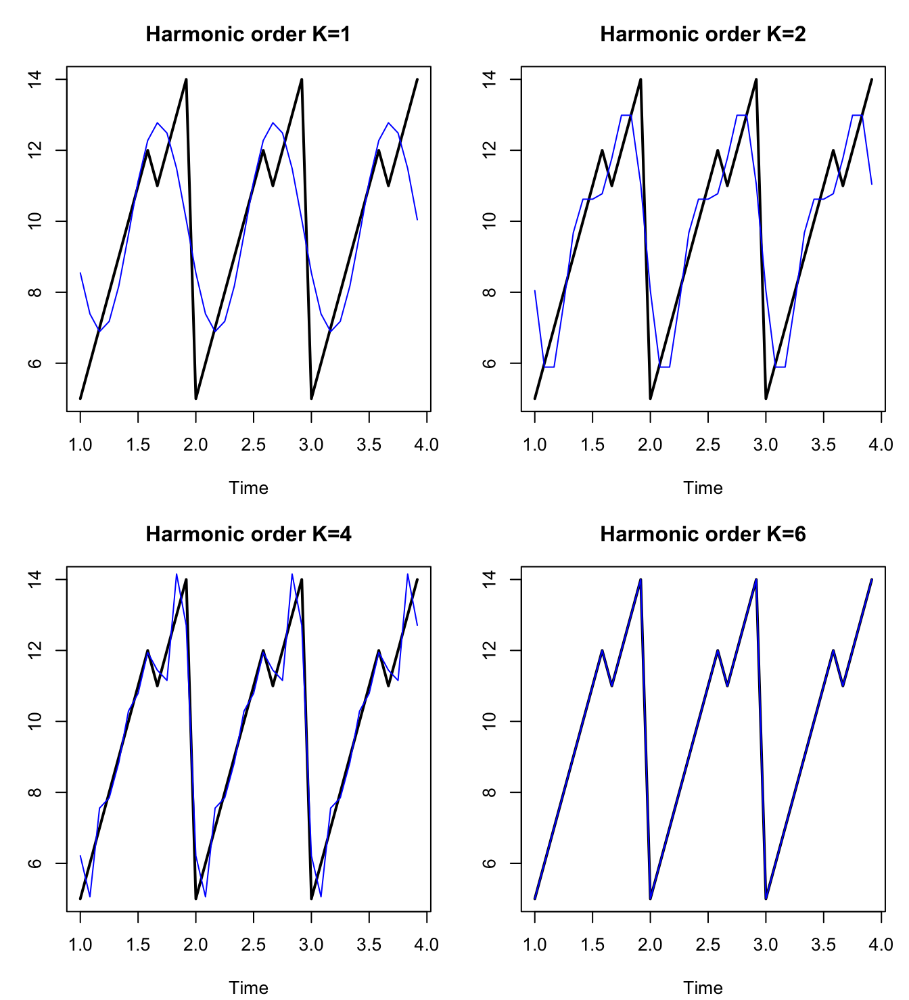
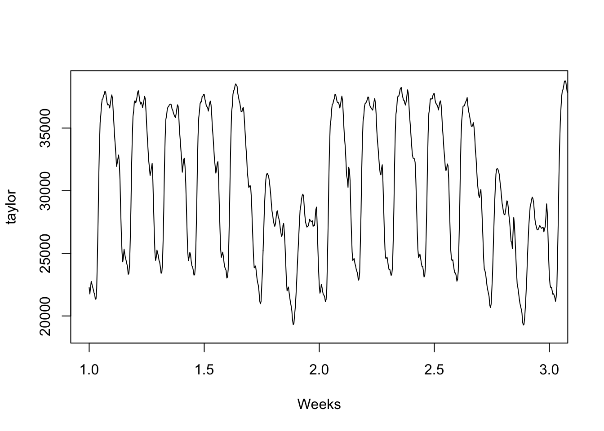
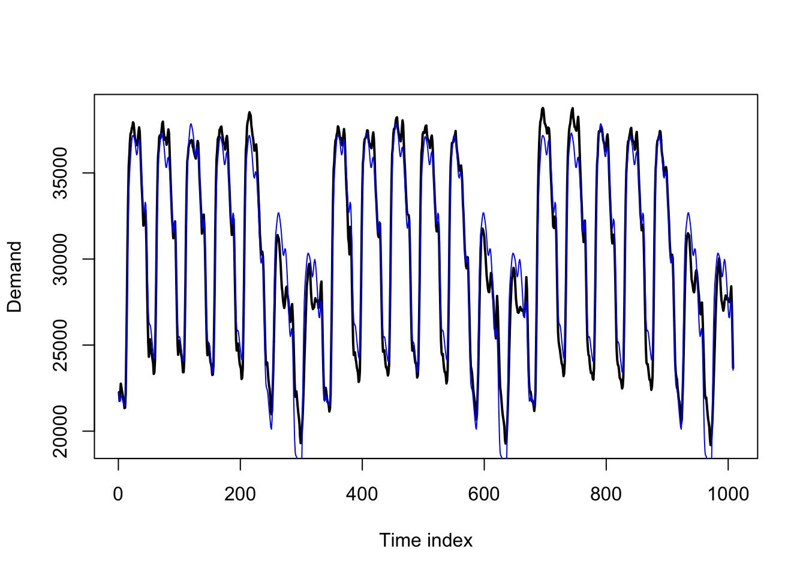
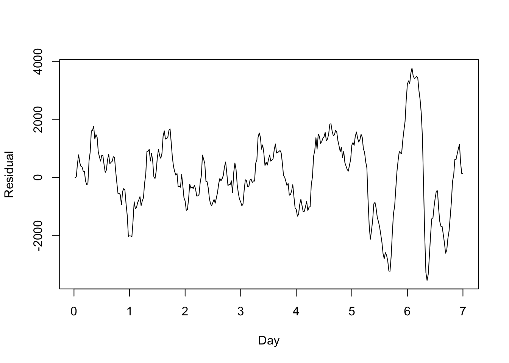
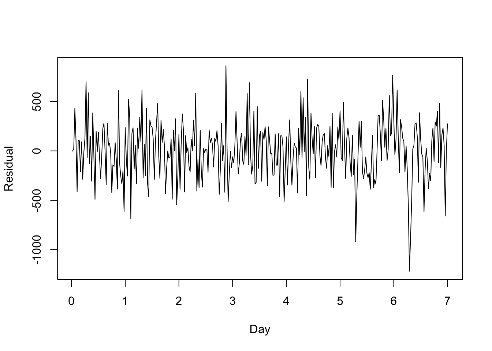
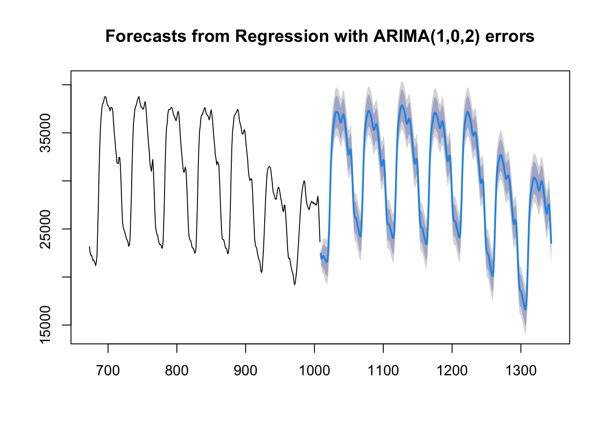

library(forecast)Harmonic predictors and multiple seasonality
Motivating the problem
We have already examined seasonality in ETS models and in SARIMA models and found that these two methods both fail to capture certain types of seasonality:1
ETS models fail to model long-period seasonality (such as daily seasonality over a year) since they must estimate a separate effect for each “season”.
ETS models also fail to model irregular seasonality (either seasonality which is not an exact multiple of the data frequency, or seasonal cycles of slightly varying length), since the estimated effects will be trained on the wrong observations from past cycles.
SARIMA models can measure long-period seasonality, but require lengthy training samples to do so, and some datasets are too short for effective parameter estimation.
SARIMA models can irregular seasonality if the signal from the prior cycle can be found on an ACF/PACF plot,2 but doing so omits strong information from neighboring observations.
SARIMA models fail to enforce any particular seasonal mean process over multiple cycles, simply suggesting a correlation between same-season observations in different cycles.
Neither model can handle multiple seasonal cycles within the same time series, unless through an inelegant “kludge”.
These models are still incredibly useful for a wide range of data, but they would not be my first choice for several commonly studied scenarios, such as:
Hourly traffic density on a busy road: 24-hour seasonality within a day but also 7-day seasonality within a week)
Weekly store revenues: Moderately-long cycles of 52+ weeks, but also each year starts at a different point midweek and some years have one more day of sales than others.
Monthly sunspot counts (long cycles of over 130 months, also cycles of slightly different lengths)
No method for modeling seasonality will be a good fit to all seasonal situations, but we can now introduce a third method which will help in some of these contexts.
Definition
As Joseph Fourier showed in 1807, any periodic function can be approximated to any degree of precision by a trigonometric series:3
Note
Let \(f(t)\) be a periodic function, meaning that for some period \(m>0\) and all real integers \(z \in \mathbb{Z}\) we can say \(f(x) = f(zm + x)\). Then,
\[f(t) \approx a_0 + \sum_{k=1}^K \left[a_k \cos(2\pi \frac{k}{m} t) + b_k \sin(2\pi \frac{k}{m} t) \right]\]
And as \(K \rightarrow \infty\), the series will converge to \(f\).4
The pair of expressions \(\cos(2 \pi \frac{k}{m}t)\) and \(\sin(2 \pi \frac{k}{m}t)\) are called harmonic regressors or harmonic predictors and their use to explain the function \(f(t)\) is called harmonic regression.
The eventual convergence of this infinite series is proven true for continuous functions, but for a time series observed in discrete time intervals we do not have to wait: perfect recovery of a regularly observed discrete time series through harmonic approximation will occur at or before \(K = m/2\):
Code
y <- ts(c(5:12,11:14,5:12,11:14,5:12,11:14),frequency=12)
harmonic <- function(K) lm(y~fourier(y,K))$fitted.values
par(mfrow=c(2,2),mar=c(4,3,3,1)+0.1)
plot(y,main="Harmonic order K=1",ylab=NA,lwd=2)
lines(1+(0:35)/12,harmonic(1),col='#0000ff')
plot(y,main="Harmonic order K=2",ylab=NA,lwd=2)
lines(1+(0:35)/12,harmonic(2),col='#0000ff')
plot(y,main="Harmonic order K=4",ylab=NA,lwd=2)
lines(1+(0:35)/12,harmonic(4),col='#0000ff')
plot(y,main="Harmonic order K=6",ylab=NA,lwd=2)
lines(1+(0:35)/12,harmonic(6),col='#0000ff')
Between the plots above and the equation above that, you might see the implicit regression taking place. Let’s say that we have a time series \(\boldsymbol{Y}\) which simply repeats a seasonal pattern with period \(m\) (represented by means \(\mu_1, \ldots, \mu_m\)) and adds white noise:
\[y_t = \mu_{t \bmod m} + \omega_t\]
We can approximate this relationship and estimate the \(m\) means \(\mu_1, \ldots, \mu_m\) through OLS regression, using the harmonic predictors with seasonality \(m\) and length equal to our sample size from \(\boldsymbol{Y}\):
\[\hat{y}_t = \hat{\beta}_0 + \hat{\beta}_{1a} \cos(2 \pi \cdot t/m) + \hat{\beta}_{1b} \sin(2 \pi \cdot t/m) + \ldots \]
Harmonic regressors can be efficient
These predictors code for sinusoidal peaks and valleys equal the full length of a seasonal period \(m\) when \(k=1\), to half the length of a seasonal period when \(k=2\), and so on. By stacking linear combinations of these predictors, we can approximate complex seasonal behavior with only a few terms.
Harmonic regressors can code for non-integer periods
Furthermore, we don’t even have to choose an integer period length. We can code for fractional periods to help describe weeks within a year or other cycles which are not multiples of our observation frequency.
Harmonic regressors can describe multiple seasonalities at once
Some data contain both weekly and daily cycles (e.g. highway traffic, with busy rush hours and empty weekends), or both yearly and monthly cycles (e.g. payroll data, with bimonthly pay periods and quarterly raise/promotion cycles).
These data pose a challenge to SARIMA and ETS models. Consider the following example, of British electricity demand measured in half-hourly intervals for several weeks in the summer of 2000:
plot(taylor,xlim=c(1,3),xlab='Weeks')
Every day sees increased electricity demand during the day, and less demand at night. Further, demand is reduced every weekend compared to the workweek.
Technically, this type of multiple seasonality can be modeled with as a single seasonality using either SARIMA(\(m=336\)) or a single set of harmonic regressors (\(m=336\)), since the shorter cycle (\(48 = 24 \times 2\) half-hours to a day) is a factor of the longer cycle (\(336 = 48 \times 7\) half-hours to the week). However, the SARIMA model would want at least 1000 observations in order to understand any seasonal effects beyond the first order, and estimation would be slow even with modern computing.5
We can instead approach this as a dynamic regression with ARMA errors.
Code
y <- taylor[1:(336*3)]
season.d <- fourier(ts(y,frequency=48),K=8)
season.w <- fourier(ts(y,frequency=336),K=4)
dynreg <- lm(y~cbind(season.d,season.w))
plot(1:(336*3),y,type='l',lwd=2,xlab='Time index',ylab='Demand')
lines(dynreg$fitted.values,col='#0000ff')
The basic regression itself produces a quite intelligible pattern, which might be fine for in-sample explanatory power. If we simply sought to understand the past, we might not even need a true time series model. However, the residuals from the regression show some ARMA-like behavior:
Code
plot((1:336)/48,dynreg$residuals[1:336],type='l',ylab='Residual',xlab='Day')
This short-term behavior is fairly stationary and could be modeled purely through the error term — an example of dynamic regression with ARIMA errors.
Code
dynerr <- auto.arima(dynreg$residuals,approximation=FALSE,stepwise=TRUE,max.p=2,max.q=2)
plot((1:336)/48,dynerr$residuals[1:336],type='l',ylab='Residual',xlab='Day')
These residuals look much more like Gaussian white noise. Rather than fitting the model in two parts as I’ve done above, my standard errors will be more accurate if I estimate them all together (the coefficients, fitted values, and residuals will be the same):
Code
dynmod <- auto.arima(y,xreg=cbind(season.d,season.w),approximation=FALSE,stepwise=TRUE,max.p=2,max.q=2)
plot(forecast(dynmod,h=336,xreg=cbind(season.d,season.w)[1:336,]),include=336)
Pros, cons, and contexts to harmonic regression
Strengths:
Harmonic regression can encode very complex seasonality with a small number of parameters/model degrees of freedom when compared to ETS or static regression fixed effects.
Harmonic regression can “snap” a series back to a single seasonal pattern much more closely than SARIMA behavior, in which each new cycle sets a new benchmark for the next one.
Harmonic regression (even with ARIMA errors) is much faster computationally than ETS or SARIMA models, especially for long-period seasonality.
Harmonic regression can easily extend to multiple seasonality, even if the seasonal periods are coprime (do not contain or align with each other).
Harmonic regression can easily extend to seasonal cycles which are not whole-number multiples of the observation frequency.
Weaknesses:
Harmonic regression encodes the same seasonal pattern into every cycle, unlike ETS which allows the seasonal pattern to shift over time, or SARIMA which merely imposes a correlation from one cycle to the next.
Harmonic regression can handle non-integer periods but cannot handle irregular periods (even SARIMA would handle irregular periods better).
For short-period seasonality (e.g. \(m=4\)), harmonic regression loses to fixed seasonal effects (such as from ETS or dummy variables), since it offers very little efficiency gains and is harder to easily interpret.
A third method, that of a naive seasonal estimator, can be seen as an extreme form of a seasonal ETS model.↩︎
For example, 52-week years or 365-day years ago as approximations for an exact year.↩︎
A deeper dive on Fourier series can be found in many places, including this Wikipedia article. Note that Fourier series are related to, but distinct from, a Fourier transform function, commonly seen in many mathematical and engineering applications.↩︎
There are several types of mathematical convergence and this statement is true for most of them.↩︎
I stopped my laptop after three hours and forty-five minutes. The code below ran in one second.↩︎